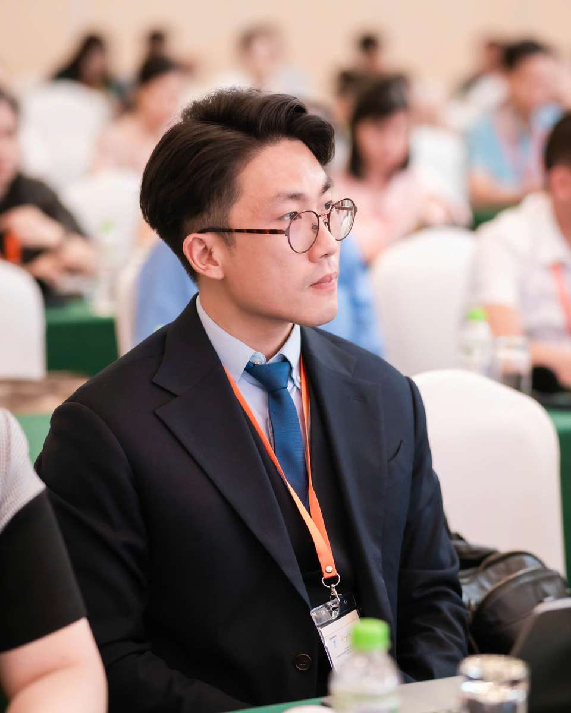

Hành trình
Từ trải nghiệm cá nhân đến sứ mệnh nghề nghiệp
Câu chuyện của tôi bắt đầu năm 15 tuổi, với chẩn đoán ung thư bạch cầu. Biến cố ấy buộc tôi phải sang Mỹ điều trị. Giữa những ngày tháng vừa kiệt sức vì bệnh tật, vừa lạc lõng ở một đất nước xa lạ, tôi nhận được sự hỗ trợ từ một nhân viên công tác xã hội lâm sàng tại bệnh viện. Người này đã trực tiếp thực hiện các buổi tham vấn tâm lý chuyên sâu cho tôi, cũng như hỗ trợ gia đình tôi lo liệu các thủ tục thực tế như giáo dục, đi lại, ăn ở và tài chính.
Họ ngồi lại cùng tôi, giúp tôi đối diện và đi qua những cuộc khủng hoảng dồn dập đổ xuống lúc bấy giờ: nỗi sợ cái chết cận kề ở tuổi 15, áp lực thích nghi khi thay đổi môi trường sống quá đột ngột, cảm giác cô độc của một đứa trẻ mới lớn phải rời xa trường lớp, bạn bè, và cả sự tự ti khi chứng kiến cơ thể mình biến đổi, rụng tóc sau những đợt hóa trị dài ngày.
Những buổi trò chuyện đó đã thay đổi hoàn toàn hướng đi cuộc đời tôi. Lần đầu tiên tôi nhận ra rằng, đằng sau mỗi chẩn đoán là cả một thế giới nội tâm đầy xáo trộn cần được thấu hiểu. Cảm giác được lắng nghe và giữ chân mình lại trong những thời khắc đen tối nhất đã thôi thúc tôi trở thành một nhà tham vấn tâm lý chuyên nghiệp. Tôi lựa chọn đi theo nhánh Lâm sàng của ngành Công tác Xã hội để có thể đồng hành với người khác bằng cả chuyên môn vững vàng lẫn sự thấu cảm của một người từng trải.
Tôi tốt nghiệp Cử nhân Tâm lý học tại Đại học Brandeis, sau đó hoàn thành bằng Thạc sĩ Công tác Xã hội theo định hướng Thực hành Lâm sàng tại Trường CUNY Silberman và nhận chứng chỉ hành nghề chuyên nghiệp (LMSW) của bang New York. Tôi có nhiều năm làm việc trực tiếp tại các khu vực còn nhiều khó khăn ở Harlem và Jamaica tại thành phố New York, tập trung vào tham vấn tâm lý cho những cá nhân phải sống chung với những rối loạn tâm thần phức tạp như rối loạn lưỡng cực, tâm thần phân liệt, sang chấn tâm lý phức tạp, lo âu và trầm cảm dạng nặng.
Năm 2019, tôi trở về Việt Nam. Hiện tại, tôi dành phần lớn thời gian để lắng nghe và đồng hành cùng người trưởng thành và trẻ vị thành niên qua các buổi tham vấn cá nhân 1-1, đồng thời tham gia tổ chức các buổi hội thảo, talkshow và chương trình đào tạo với mong muốn đưa những kiến thức thực tế về sức khỏe tinh thần đến gần hơn với cộng đồng.

“Sự hỗ trợ đúng cách, từ đúng người và vào đúng thời điểm đã thay đổi cuộc đời tôi. Đó là lý do vì sao tôi làm công việc này.”
Gần một thập kỷ đồng hành cùng hàng trăm người trên hành trình hiểu mình và tìm lại sự cân bằng.